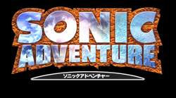
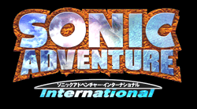
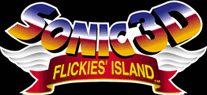
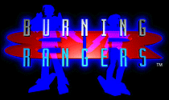

それぞれのページへGO！

「チューチューロケット！」
１９９９年１１月１１日 発売
￥２８００（税別）

「ソニックアドベンチャー」
１９９８年１２月２３日 発売
￥５８００（税別）

「ソニックアドベンチャー・インターナショナル」
１９９９年１０月１４日 発売
￥５８００（税別）

「ＳＯＮＩＣ３Ｄ・フリッキーアイランド」
１９９９年１０月１４日 発売
￥３８００（税別）

「バーニング レンジャー」
未来世界では、科学の進歩に比例して人類の生活環境も急激な変化を遂げた。そこで発生する災害も昔とは比べ物にならないほど危険を帯びたものになっていた。
このゲームは、未来を舞台とした特殊消防レスキュー隊「ＢＵＲＮＩＮＧ ＲＡＮＧＥＲＳ」の物語です。
彼らはあらゆる危険な場所へ人命救助のため、乗り込みます。
命をかけた彼らの戦いが今始まる…
１９９８年２月２６日 発売
￥５８００（税別）

Project SONIC 第二弾！
「SONIC R」
発売中 定価：５８００円

Project SONIC 第一弾 ！
「ソニック ジャム」
セガサターンにヤツらが帰ってきた！
全世界で大ヒットした超音速アクションゲーム「ソニック・ザ・ヘッジホッグ」が
長い沈黙を破りついにセガサターンに登場！
プロジェクト ソニック第１弾は、メガドライブで発売されたシリーズの代表４作品（ソニック・ザ・ヘッジホッグ１〜３，ソニック＆ナックルズ）をカップリング。
セガサターン版オリジナル要素も加わり、ファンならずとも必見の１本だ！！
発売中 定価：４８００円

「ナイツ」
あなたが、「悪夢の世界」に迷い込んだら、ナイツを思い出して下さい。
自由気ままに空を飛ぶナイツ、優しく微笑むナイツ、そして悪夢の支配に挑むナイツ・・・。
NiGHTSは、あなたの夢の世界を舞台に繰り広げられる爽快な夢と勇気のアドベンチャーストーリーです。
発売中 定価：５８００円

「クリスマスナイツ」
「NiGHTS」のスプリングバレー面をクリスマス仕様にしたスペシャルディ
スク「クリスマスナイツ」は、画面もBGMもクリスマス一色。
ソニックチー
ムが、ナイツを応援してくれたみなさんへ心をこめて作った作品です。
非売品：発送終了しました